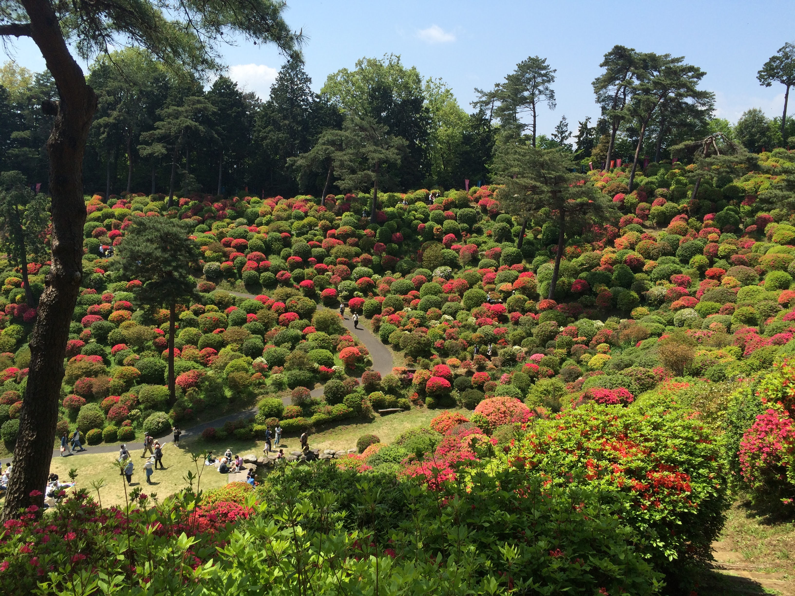
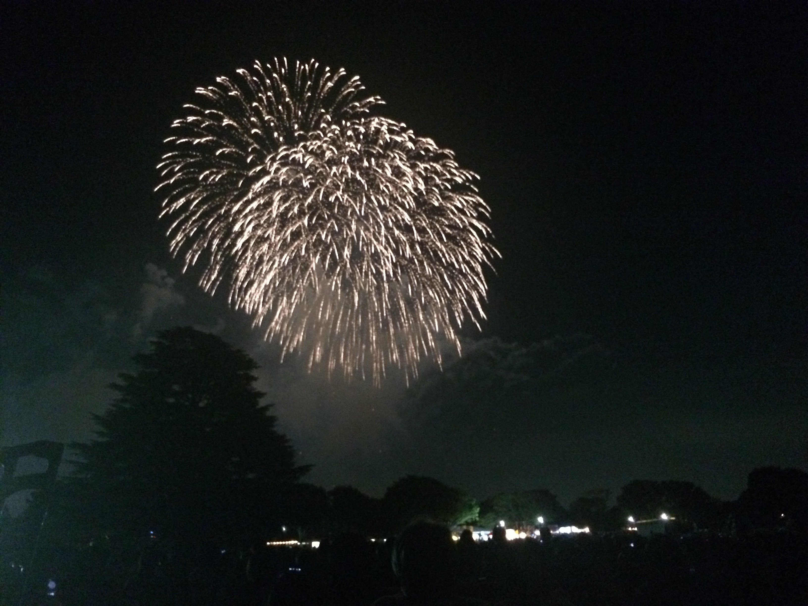

The following videos are from NHK World - Japan.
There are festivals throughout the year in Japan. Some are small and celebrated locally, and some are larger.
Some festivals are sponsored by a local shrine or temple, or put on by a city.
The Japanese word for festival is 'matsuri' and often has events such as a procession and dancing.
Festivals generally have vendors selling food and trinkets, and stalls with games.
A popular time to travel to Japan is during the spring, in order to see the cherry blossoms.
In Japan, 'hanami' means 'blossom viewing' and many areas have their own 'sakura matsuri', or cherry blossom festival.
Often held in parks or open areas with many cherry trees nearby, people like to set up picnics and sit under the blossoming trees.
Many vendors set up stands to sell food, and people like to drink and play badminton.
Tanabata, sometimes called the 'star festival', is a celebration that happens in July or August.
It is traditional to write a wish for the upcoming year, then hang it on bamboo.
The bamboo is displayed with other decorations, and is very colorful.
There are usually 'decorating contests', where groups like businesses or schools make a tanabata display for their building.

When the azaleas begin blooming in Japan, from April to May, there is a festival held at Shiofune Kannon temple in Ome.
It is said that there are over 20,000 azaleas planted on the surrounding hills, and the brilliant pink, red, white, and purple blossoms are spectacular.
You can walk along trails in the hills directly among the azalea bushes, and there are some small food stalls and souvenir booths.

Every weekend starting in June, you can find a "natsu matsuri" or summer festival happening somewhere nearby.
They don't have a certain date, but take place throughout the summer and usually are put on by the city or some regional group.
People wear a traditional robe, a 'yukata', and enjoy picnics in the grass with family and friends.
During the day you can eat shaved ice and takoyaki, and there can be performances like traditional dancing and taiyo drumming.
At night there is a big fireworks show!